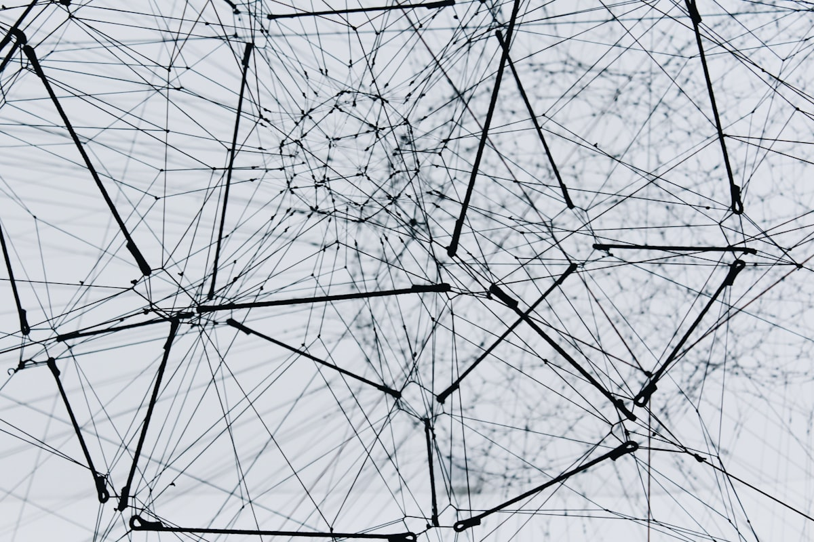

지하철에서 멍하니 창밖을 볼 때의 기분

오늘도 지하철에 탔어. 특별히 갈 곳이 있어서가 아니라, 그냥 나가야겠다는 생각이 들어서. 차에 오르자마자 창가 자리로 갔는데, 생각보다 사람이 많지 않아서 한가로운 기분이 들더라고. 창밖으로 고개를 돌리니까 풍경이 슬슬 지나가기 시작했어.
지하철에서 창밖을 볼 때가 있잖아. 딱히 생각할 게 없어서 그냥 멍하니 보게 되는 순간들. 근데 이게 생각보다 오래가더라고. 한 정거장, 두 정거장 지나가는 동안 그냥 눈앞에 펼쳐지는 것들을 받아들이기만 하는 거야. 뇌가 꺼진 것처럼 아무 생각도 안 들 때가 있어.
근데 또 가끔은 이상한 생각이 들어. 지금 이 풍경을 보고 있는 나는 누구고, 저기 밖에서 지하철을 보고 있는 사람은 누구일까. 같은 공간에 있으면서도 전혀 다른 시점을 가진 사람들이라는 게 묘한 거야. 나는 지나가는 사람이고, 저 사람은 지켜보는 사람이고.
생각핸지는 모르겠는데, 이런 순간이 꽤 자주 있는 것 같아. 특별한 게 아니라서 오히려 더 잊혀지지 않는 기분이랄까. 뭔가 중요한 것을 발견한 것도 아니고, 새로운 깨달음이 있는 것도 아닌데, 그냥 그 상태 자체가 편안하더라고.
스쳐 지나가는 것들
창밖을 볼 때 가장 먼저 눈에 들어오는 건 당연히 풍경이야. 건축물들이 스쳐 지나가고, 간판들이 스쳐 지나가고, 사람들이 스쳐 지나가. 모든 것이 빠르게 지나가서 정확히 무엇인지 파악할 새도 없어. 근데 그게 오히려 좋은 것 같아.
왜냐면 모든 것이 스쳐 지나간다는 건, 내가 모든 것을 붙잡을 필요가 없다는 뜻이거든. 세상에는 너무 많은 것들이 있고, 그중에서 내가 진짜로 필요한 것은 극히 일부일 텐데, 우리는 자꾸 모든 것을 다 알아야 할 것 같은 착각을 하잖아. 창밖을 볼 때는 그런 강박이 없어. 그냥 지나가는 대로 보고, 지나가는 대로 잊어버리면 되니까.
가끔은 특정한 건축물이나 간판이 눈에 띄기도 해. 근데 그게 뭔지 정확히 알고 싶을 때쯤 이미 멀리 지나가 버렸거든. 다시 볼 수 없는 순간이랄까. 이런 것들이 모여서 지하철 창밖 풍경이 되는 거 같은데, 각각이 따로 존재하는 게 아니라 한 덩어리로 느껴져.
그리고 생각핸지는 모르겠는데, 지하철에서 본 풍경은 사실 하나의 연속된 이야기가 아니라, 무수한 단편들의 집합인 것 같아. 이 건축물과 저 건축물 사이에 논리적 연결고리가 있는 건 아니잖아. 그냥 선로가 지나가는 대로 보이는 것들일 뿐이야. 근데 우리 뇌는 이걸 하나의 흐름으로 인식하거든. 이게 참 묘한 것 같아.
속도와 거리
지하철은 빠르게 움직여. 근데 창밖을 볼 때는 그 속도감이 그렇게 실감나지 않을 때가 있어. 멀리 있는 건축물들이 천천히 지나가 보이고, 가까운 것들은 빠르게 스쳐 지나가거든. 거리에 따라서 속도가 다르게 느껴지는 거야.
이게 인생이랑 좀 비슷한 것 같기도 해. 가까이 있는 문제는 급하게 다가오고, 멀리 있는 미래는 천천히 변해 보이는 거잖아. 근데 사실은 같은 속도로 지나가고 있는데, 우리의 인식이 다르게 만드는 거지. 멀리 있는 것들은 당장 와닿지 않으니까 덜 급하게 느껴지는 거야.
창밖을 볼 때 가끔 시선을 멀리 두면 재밌는 게 보여. 멀리 있는 고층 건축물들이 서서히 지나가고, 가까운 담장들은 쌩쌩 지나가는 거야. 같은 시간 속도인데도 완전히 다른 느낌이 들거든. 이게 상대성이랄까. 모든 것은 관점에 따라 다르게 보이는 거 같아.
근데 또 생각핸지는 모르겠는데, 지하철 안에 있는 나는 사실 움직이지 않는 거잖아. 의자에 앉아서 가만히 있을 뿐이고, 움직이는 건 밖의 풍경이야. 근데 우리는 늘 "지하철을 타고 간다"고 표현하거든. 이동의 주체가 누구인지 헷갈릴 때가 있어.
터널 속의 시간
지하철이 터널로 들어가면 창밖이 깜깜해져. 유리창에 비친 내 얼굴이 보일 정도로. 이럴 때는 밖을 보는 게 아니라, 안을 보게 되는 거야. 내 모습이 반사되어 보이고, 같은 칸에 있는 다른 사람들도 희미하게 보이고.
터널 속에서 시간은 좀 다른 방식으로 흐르는 것 같아. 밖에 풍경이 안 보이니까, 지금 어느 정도 왔는지 감도 안 오고, 다음 역이 언제인지도 모르겠거든. 마치 시간이 멈춘 것 같은 기분이 들 때가 있어. 어둠 속에서 조명만 켜진 이 공간이, 현실과는 조금 떨어진 공간처럼 느껴지는 거야.
이런 시간이 꽤 오래갈 때도 있어. 특히 강을 지나갈 때나 산을 관통할 때는 터널이 길거든. 근데 나는 이 시간이 그렇게 싫지만은 않아. 오히려 생각할 수 있는 시간이라서 좋을 때도 있어. 아무것도 안 보이니까, 눈을 감고 있어도 되고, 멍하니 있어도 되고.
생각핸지는 모르겠는데, 터널에서 나올 때의 그 순간이 묘하게 기분 좋더라고. 갑자기 빛이 들어오고, 다시 풍경이 보이기 시작할 때. 마치 어떤 경계를 넘은 것 같은 느낌이야. 어둠에서 밝음으로, 닫힌 공간에서 열린 공간으로. 이게 지하철만의 특별한 경험인 것 같아.
낯선 풍경과 익숙한 풍경
지하철을 타다 본 전 처음 보는 구간도 있고, 너무 익숙해서 지루한 구간도 있어. 낯선 곳을 지날 때는 눈이 자동으로 더 크게 떠지거든. 새로운 것들이 보이니까 뇌가 더 활성화되는 것 같아.
근데 익숙한 구간도 나쁘지만은 않아. 그냥 흘려볼 수 있는 여유가 생기거든. "아 여기구나" 하고 알아차리는 순간, 뇌가 좀 쉬는 것 같아. 너무 모든 것에 집중하려 하지 않아도 되니까. 자동 pilot 모드로 가는 거지.
생각핸지는 모르겠는데, 우리 삶도 이런 것 같아. 낯선 경험과 익숙한 경험이 번갈아가면서 오거든. 둘 다 필요한 것 같아. 새로운 자극도 받아야 하지만, 익숙한 것에서 안정감도 찾아야 하고. 지하철 창밖을 볼 때 이 두 가지가 교차하는 게 흥미로워.
가끔은 모르는 역에 남들이 다 내리는 걸 볼 때가 있어. 저 사람들은 저기서 뭘 하려나, 어디로 가려나, 하는 궁금함이 들거든. 근데 나는 그냥 계속 가야 하니까, 그 사람들의 이야기는 알 수 없이 지나가버려. 스쳐 지나가는 인연들이랄까.
창문이라는 경계
창문은 경계야. 안과 밖을 나누는 물리적 경계도 있지만, 그보다 더 중요한 건 경험의 경계인 것 같아. 창문 안에 있는 나는 관찰자고, 밖에 있는 것들은 관찰 대상이야. 근데 이 경계가 유리라는 재질 때문에 애매하기도 해.
유리는 보이지만 닿을 수 없잖아. 마치 우리가 경험할 수 있는 세계와 없는 세계의 경계 같은 거야. 볼 수는 있지만 직접 가지 못하는 것들, 알 수는 있지만 이해할 수 없는 것들. 지하철 창문을 볼 때 이런 생각이 들 때가 있어.
그리고 유리창에 비치는 내 모습도 신경 쓰이기도 해. 밖이 밝을 때는 잘 안 보이다가, 터널에 들어가면 선명하게 보이거든. 나도 그 풍경의 일부처럼 보이는 거야. 안과 밖이 구분되지 않는 순간이랄까. 이게 좀 묘한 기분이 들어.
생각핸지는 모르겠는데, 창문이 없었다면 지하철은 어떤 느낌일까. 아마 답답하거나 불안할 것 같아. 밖이 보이지 않으면 내가 어디로 가고 있는지 모르니까. 창문은 단순히 빛을 들여오는 구멍이 아니라, 우리가 세상과 연결되어 있다는 증거 같은 거야.
멈추지 않는 것들
지하철은 멈추지 않고 가거든. 내가 원하든 원하지 않든 일정한 속도로 움직여. 이런 것들이 있어. 내 의지와 상관없이 흘러가는 것들. 시간도 그렇고, 계절도 그렇고, 나이도 그렇고.
창밖을 볼 때 이런 생각이 들어. 내가 뭔가를 하든 말든 세상은 계속 돌아가고, 사람들은 각자의 일을 하고, 건축물은 그 자리에 있고. 나는 그저 그 흐름 속에 잠시 탑승해 있는 것뿐인 거 같아.
근데 이게 위축되는 느낌은 아니야. 오히려 핰방납되는 기분이 들 때가 있어. 내가 모든 것을 통제해야 한다는 부담감에서 잠시 벗어날 수 있는 거지. 지하철은 알아서 가고, 나는 그냥 앉아서 창밖을 볼 수 있으니까.
생각핸지는 모르겠는데, 이런 순간이 있어서 우리가 계속 살아갈 수 있는 것 같기도 해. 모든 것을 내가 결정하고 책임져야 한다면 너무 힘들잖아. 가끔은 그냥 흘러가는 대로, 멈추지 않는 흐름에 몸을 맡기는 시간도 필요한 거 같아.
마무리
오늘도 지하철에서 창밖을 본다. 특별한 결론이 있는 건 아니야. 그냥 그런 시간이 있었다는 거야. 멍하니 앉아서 스쳐 지나가는 것들을 보고, 가끔씩 생각도 하고.
지하철이 다음 역에 도착할 것 같아. 사람들이 일어나서 문 쪽으로 가고, 새로운 사람들이 타고 오겠지. 나는 아직 갈아타야 할 역이 아니니까 그냥 앉아 있을 거야. 창밖은 계속 지나가고, 시간은 계속 흐르고.
이런 시간이 있어서 그런지 모르겠는데, 살아가는 게 그렇게 버겁지만은 않은 것 같아. 아무것도 안 핸도 되는 시간, 그냥 존재만 핸도 되는 시간. 지하철 창밖을 볼 때 그런 시간을 갖게 되는 거 같아.
다음에 또 지하철을 탈 거야. 그때도 창가 자리에 앉아서 창밖을 볼 거야. 어떤 풍경이 보일지, 어떤 생각이 들지 모르겠어. 근데 그게 중요한 건 아닌 것 같아. 그냥 그 순간이 있었다는 것 자체가 의미가 있는 거지 뭐.
여기까지 쓰고 보니까 생각보다 많은 걸 적었네. 원래 지하철에서 창밖을 볼 때 이런 생각 다 하는 건 아니거든. 대부분은 아무 생각도 없이 멍하니 있어. 근데 가끔은 이런 생각이 스쳐 지나가. 그리고 그 생각들도 스쳐 지나가 버려. 다음 역에서.